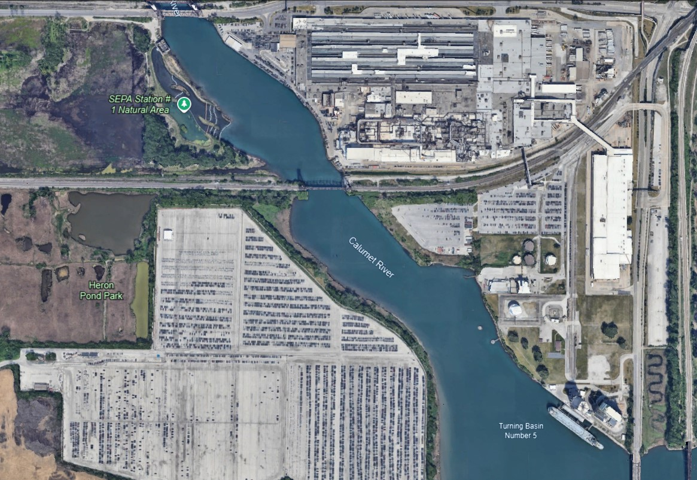

{% extends "layout.html" %} {% load static %}
{% block content %}
<title>Document</title>
<link href="../static/css/bootstrap.min.css" rel="stylesheet" />
<link href="../static/css/style.css" rel="stylesheet" />
<link
  rel="stylesheet"
  href="https://cdn.jsdelivr.net/npm/bootstrap-icons@1.11.3/font/bootstrap-icons.min.css"
/>
<script
  type="text/javascript"
  src="{% static 'scripts/jquery-3.7.1.min.js' %}"
></script>
<script
  type="text/javascript"
  src="{% static 'customscripts/common.js' %}"
></script>
<script
  type="text/javascript"
  src="../static/customscripts/customer.js"
></script>
<style>
  .marker .marker-image {
    width: 24px;
    height: 24px;
    position: absolute;
    top: -12px; 
    left: -12px; 
}
</style>
<div class="bg-light p-4">
  <div class="scroll-div">

      <div id="imageContainer" style="position: relative">
        
      </div>
      <br />
      <button onclick="saveMarkers()">Submit</button>

  </div>
</div>
<script>
document.getElementById('factoryImage').addEventListener('click', function(event) {
    // Get the click position
    const rect = event.target.getBoundingClientRect();
    const x = event.clientX - rect.left;
    const y = event.clientY - rect.top;

    // Create a marker at the clicked position
    const marker = document.createElement('div');
    marker.className = 'marker';
    marker.style.position = 'absolute';
    marker.style.left = `${x}px`;
    marker.style.top = `${y}px`;

    // Create an image element for the marker
    const markerImage = document.createElement('img');
    markerImage.src = "../static/images/marker.png"; // Specify the path to your marker image
    markerImage.alt = 'Marker';
    markerImage.className = 'marker-image';

    // Append the marker image to the marker container
    marker.appendChild(markerImage);

    // Create a textbox for additional input
    const textbox = document.createElement('input');
    textbox.type = 'text';
    textbox.placeholder = 'Enter details...';

    // Create a delete button to remove the marker
    const deleteButton = document.createElement('button');
    deleteButton.textContent = 'Delete';
    deleteButton.style.marginLeft = '8px';
    deleteButton.addEventListener('click', function() {
        // Remove the marker when the delete button is clicked
        marker.remove();
    });

    // Append the textbox and delete button to the marker
    marker.appendChild(textbox);
    marker.appendChild(deleteButton);

    // Append the marker to the container
    document.getElementById('imageContainer').appendChild(marker);
});
</script>
{% endblock %}
